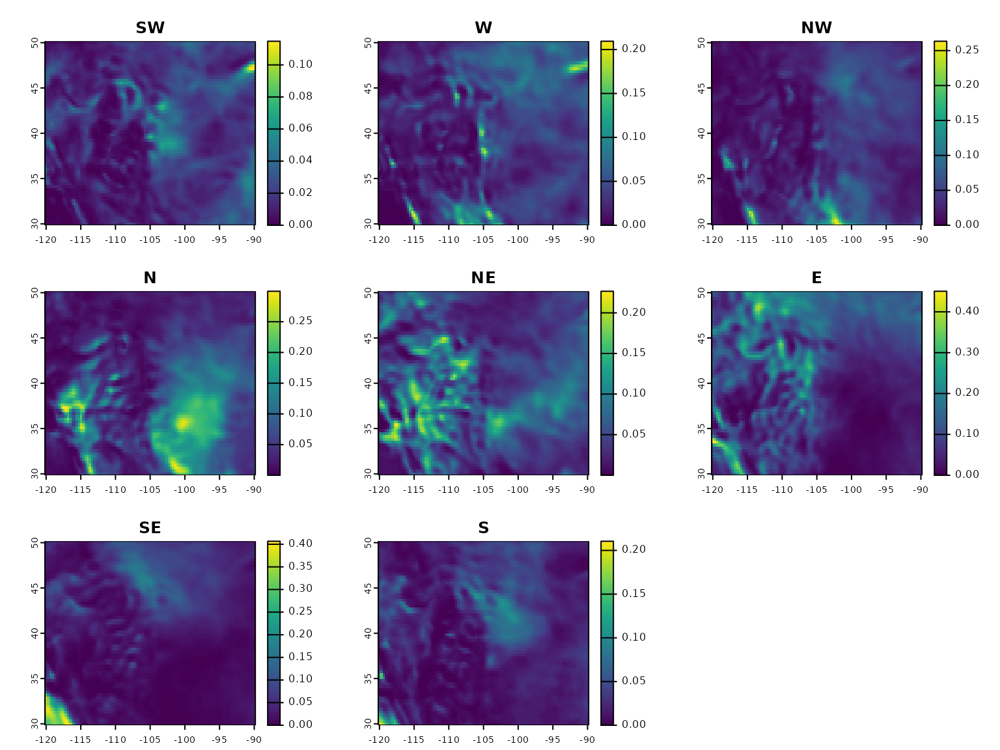

windscape
windscape.RmdIntroduction
The windscape package was designed to help users analyze
the role of wind geography in spatial ecology. Wind strength and
direction vary over space and time, influencing the transport dynamics
of airborne particles like spores, pollen, seeds, and insects, and in
turn shaping emergent biodiversity patterns such as landscape genetics,
community composition, and species distributions.
The functions in windscape help you to download hourly
wind rasters, convert them into a landscape connectivity graph, use the
graph to estimate directional wind flows among sites of interest, and
test the statistical relationships between these flows and your own
ecological data. Each of these four steps is detailed in its own section
below.
This package differs from other wind connectivity modeling frameworks
like rWind in that it focuses not on a snapshot of wind
conditions but on connectivity over longer time periods, integrating
over many shorter, step-wise dispersal events that occur over time.
To get started, let’s load the windscape package, as
well as tidyverse for its general utility:
Importing wind data
The input data for a windscape analysis is a time series of wind
fields. A single wind field is a pair of raster layers, with values in
each grid cell representing the u and v
components of the local wind vector at one point in time. Because the
modeling approach is designed to capture temporal variability in wind
conditions, high-frequency time series data should be used; summaries
like monthly, annual, or multi-year mean wind fields will probably give
poor results. “Reanalysis” data sets, such as the CFSR, ERA5, and NARR,
are great data sources as they comprise decades of
hourly gridded wind data that give excellent
representations of wind variability over space and time.
Depending on the study system, one might wish to model wind
connectivity using a relatively short time frame of a few days or weeks,
or to integrate over decades of wind conditions to more fully capture
the variability of wind dynamics that shape ecological patterns over
longer time frames. Users might also want to filter their input wind
data by season, time of day, or temperature, in order to isolate wind
conditions when their study species is likely to be airborne.
windscape models are built using data for a single
atmospheric layer, and vertical transport is not considered. In this
vignette we’ll use data on near-surface (10 m) winds, but
higher-altitude wind data could also be used.
Wind data can be downloaded from within R, or can be obtained separately and loaded into R. Let’s see an example of both approaches.
The function cfsr_dl() downloads hourly wind data from
the Climate Forecast System Reanalysis (CFSR). In the code below, we’ll
import 10-m-level data for a chunk of North America for a sparse series
of days distributed across a single summer. A real analysis would likely
want a denser and/or longer time series. This example runs in a few
minutes, but it could take hours or longer to download a more complete
dataset. (Note that because this region is in the western hemisphere and
CFSR uses longitudes in the 0-360 range, some shifty business is
needed.)
wind <- cfsr_dl(variable = "wnd10m", years = 2000, months = 6:9, days = seq(1, 28, 3),
xlim = c(-120, -90) + 360, # shift longitudes to be in [0, 360] range for CFSR
ylim = c(30, 50)) %>%
shift(dx = -360) # shift longitude back to the standard [-180, 180] rangeAlternatively we can load wind data locally from disk (a more likely
scenario for an actual analysis), using terra::rast(). The
data set loaded below, which ships with the windscape
package, is the same one downloaded by the example code above. We can
see it’s a SpatRaster object with many layers, each a ‘u’
(east-west) or ‘v’ (north-south) component of the local wind vector for
a particular date and time.
wind <- rast(system.file("extdata/wind.tif", package = "windscape"))
wind
#> class : SpatRaster
#> dimensions : 64, 96, 1152 (nrow, ncol, nlyr)
#> resolution : 0.3157895, 0.3174603 (x, y)
#> extent : -120.1579, -89.84211, 29.84127, 50.15873 (xmin, xmax, ymin, ymax)
#> coord. ref. : lon/lat WGS 84
#> source : wind.tif
#> names : u 2000-01-01, u 200~00:00, u 200~00:00, u 200~00:00, u 200~00:00, u 200~00:00, ...
#> min values : -4.80, -4.68, -4.02, -3.96, -4.15, -4.54, ...
#> max values : 7.84, 7.63, 9.20, 9.77, 10.05, 10.17, ...Next we’ll convert these data into a formal wind_field
object, which is a SpatRaster of wind data meeting certain
criteria. To do this, we need to tell it that our wind
dataset has order = "uuvv", meaning all the u components
come first, followed by all the v components; other data sets might have
order = "uvuv". (It’s assumed that the order of the u’s is
the same as the v’s, so we need to be confident of this based on
knowledge of our data.) The wind_field() function creates a
wind field object:
field <- wind_field(wind, order = "uuvv")Constructing a connectivity graph
In order to estimate wind flows among sites of interest, we need to
first convert our big wind field time series into a directed
connectivity graph representing the average wind flow between each grid
cell and each of its eight “queen” neighbors. The steps in this process
include summarizing the time series into a wind_rose raster
object, optionally modifying the wind rose to incorporate non-wind
factors influencing dispersal, and/or to increase its spatial
resolution, and then converting this into a wind_graph
transition object.
1: Creating a wind rose
A wind_rose object, constructed with the
wind_rose() function, is a raster data set with eight
layers, each of which represents long-term wind conductance in the
direction of a neighboring cell. These conductance values are a function
of the input data on wind speed and direction, adjusted for the
curvature of the earth, distances to neighboring cells, and potential
differences between x and y raster resolutions.
The main decision when creating a wind rose is the trans
argument, which defines the transformation that turns wind speed into
conductance strength. The default is trans = 1, which makes
conductance proportional to wind speed – but alternatively, conductance
can be made proportional to aerodynamic drag (speed^2) or to wind force
(speed^3), can account for threshold speeds above which seed abscission
is likely to occur, or can ignore speed entirely and consider only
direction; see ?wind_rose for details.
After a local wind vector for a particular time step is transformed
from speed to conductance, this conductance is allocated between a
cardinal and semi-cardinal neighbor, in proportion to the angle and
distance between the downwind direction and the directions of the two
adjacent downwind neighbors. Conductance values are calculated for each
individual time step in the wind field data set, and then averaged to
produce the final wind rose object. If input speeds are in m/s and
trans = 1, then the wind rose conductance values are in
units of 1/hours.
Let’s covert our wind_field into a
wind_rose here. Plotting it, we see that is has 8 layers,
one for wind connectivity in each semi-cardinal direction.

2: Incorporationg non-wind dispersal barriers (optional)
In some cases, you may want to account for factors other than wind
that influence connectivity across a landscape, by down-weighting
conductance over cells that contain water, inhospitable terrain, or
other dispersal barriers. To incorporate factors like this, we can use
the weight_conductance() function to scale the values in
our wind_rose. Weights are supplied as a raster layer with
values between 0 and 1.
As an example, let’s downweight conductance by 90% in grid cells with
open water. Large water bodies could reduce landscape genetic
connectivity for wind-dispersed terrestrial organisms, since water can’t
support the intermediate populations that help facilitate long-term gene
flow across a landscape. In the example below, we’ll use the
cfsr_dl_land() function to download a land-water raster
layer corresponding to our CFSR wind data set, classify()
its values to convert 0’s (water) to 0.1 while leaving 1’s (land) as is,
and then use this weights layer to adjust our wind rose. Plotting the
first layer of the modified wind rose, we can see ocean and lake areas
in the southwest and northeast corners where conductance has been
reduced:
3: Adjusting spatial resolution
Next, we have to consider how the spatial resolution of our wind data
relates to the distances among our study sites. The CFSR data we’re
using in this example, like many comparable data sets, has a grid cell
size of around ~30 km. This resolution will work well for estimating
wind conductance among distant sites, but since windscape models
estimate connectivity among the centers of the grid cells where sites
occur (regardless of where in the cell the a site is located), estimates
will be very noisy for sites separated by only a few cells, and will be
impossible for sites in the same cell. We can check whether this is a
problem using the check_cell_distance() function.
If it is a problem, we can address it by increasing the resolution of
our data set using the downscale() function, which
interpolates wind conductance data and adjusts the values to maintain
the correct connectivity units. (Note that the
wind_cost_distance() function, discussed below, can also
make its own internal adjustments for cell-distance discrepancies, so
downscaling is not the only solution.) Note that this downscaling
process does not add more information; it just “smooths” the wind
values. It fixes artifacts of the coarse resolution, but it does not
account for any real fine-scale variation in wind dynamics that actually
occurs within a grid cell due to factors like local terrain.
Importantly, while downscaling increases accuracy for nearby sites,
it comes at a computational cost. Downscaling a wind rose by a factor of
10 will increase its size 100-fold, increasing memory usage and
dramatically increasing processing time for the connectivity
calculations discussed below. For many analyses, a compromise resolution
can be used that balances accuracy and computational tractability. When
this isn’t possible, the vrcd() function can be used to
circumvent the trade-off; see the documentation for that function for
more details.
As an example, let’s imagine we have a set of ten study sites. Here we’ll randomly generate spatial coordinates for their locations. Then we’ll check how our wind rose resolution will work for these sites:
sites <- cbind(x = runif(10, -115, -95),
y = runif(10, 33, 47))
check_cell_distance(rose, sites)
#> Loading required package: geosphere
#> Total point pairs: 45
#> Point pairs in the same grid cell: 0 (0%)
#> Distribution of cell-point distance discrepancies:
#> 0--1%: 21 (46.7%)
#> 1--2.5%: 15 (33.3%)
#> 2.5--5%: 8 (17.8%)
#> 5--10%: 1 (2.22%)
#> 10--25%: 0 (0%)
#> 25--Inf%: 0 (0%)It looks like we have no site pairs in the same grid cell, which is great. But we do have one site pair with a distance error of 5-10%, and another 23 pairs with errors of 1-5%. These aren’t huge errors but they’ll add some noise to our wind estimates. Let’s downscale our wind rose by a factor of 5, and then re-check our distance error rates:
rose <- downscale(rose, 5)
check_cell_distance(rose, sites)
#> Total point pairs: 45
#> Point pairs in the same grid cell: 0 (0%)
#> Distribution of cell-point distance discrepancies:
#> 0--1%: 43 (95.6%)
#> 1--2.5%: 2 (4.44%)
#> 2.5--5%: 0 (0%)
#> 5--10%: 0 (0%)
#> 10--25%: 0 (0%)
#> 25--Inf%: 0 (0%)After downscaling, 96% of our site pairs now have distance
discrepancies of less than 1%, and the other 4% all have discrepancies
of less than 2.5% – probably an acceptable margin of error given all the
other sources of uncertainty in a modeling analysis, and given the
additional corrections used in least_cost_distance().
4: Building a wind graph
Next we need to create a wind_graph object using the
wind_graph() function. Technically, a wind graph is a
transitionLayer as defined in the gdistance
package.
The only decision here is whether we want a downwind or
upwind connectivity model. These are inversions of the same
idea: the outbound (downwind) conductance from site A to site B is the
same thing as the inbound (upwind) conductance arriving to site B from
site A. The decision is not critical if the goal is to analyze flows
among a set of sites, but if the goal is to create maps of the entire
wind accessibility landscape for a single site, then the difference is
more material. We’ll create a graph of each type here:
downwind <- wind_graph(rose, direction = "downwind")
upwind <- wind_graph(rose, direction = "upwind")
upwind
#> class : wind_graph
#> dimensions : 320, 480, 153600 (nrow, ncol, ncell)
#> resolution : 0.06315789, 0.06349206 (x, y)
#> extent : -120.1579, -89.84211, 29.84127, 50.15873 (xmin, xmax, ymin, ymax)
#> crs : +proj=longlat +datum=WGS84 +no_defs
#> values : resistance
#> matrix class: dgCMatrixEstimating wind connectivity
The wind_graph we created above is our final wind
connectivity model, and we can use it in various ways to estimate rates
of wind transport among sites. This package supports two algorithms for
calculating wind flows between sites: “least cost path” (LCP) and
“random walk” (RW). Note that because wind inherently involves
directional flow, wind connectivity has to be represented by a “directed
cyclic” graph, which makes it impossible to use circuit theory-based
algorithms that are commonly used in other landscape connectivity
applications.
The LCP algorithm finds the fastest wind travel route across a landscape, based on the local connectivity between each cell and its neighbors. It is computationally efficient, and it represents the speed at which the first air particles would arrive at site after diffusing across the landscape from a given origin location, given certain assumptions.
The RW method instead runs a stepwise simulation. It is computationally much slower, but it captures the full distribution of particles diffusing in different directions rather than simply the speed of the first, fastest particle to reach a site.
Least cost path
Wind LCP calculations are handled through the
least_cost_surface() and least_cost_distance()
functions. Both functions calculate the same metric but for different
data structures. For wind models constructed with
trans = 1, they produce results in units of travel time
between grid cells; otherwise they give relative measures with less
interpretable units.
least_cost_surface() calculates the least cost distance
between a set of user-defined sites (one or more point locations) and
every grid cell across the region, producing a wall-to-wall raster of
wind cost-distance; if an upwind model is used then the
output represents travel times from a given grid cell to the focal site,
whereas a downwind model will calculate travel times from
the focal site to cells across the landscape. Here we’ll calculate both
variants, and make maps of them:
site <- matrix(c(-105, 40), ncol = 2)
downwind_hrs <- least_cost_surface(downwind, site)
upwind_hrs <- least_cost_surface(upwind, site)
# restructure data and plot
d <- c(downwind_hrs, upwind_hrs) %>%
setNames(c("downwind", "upwind")) %>%
as.data.frame(xy = T) %>%
gather(direction, wind_hours, -x, -y)
ggplot(d) +
facet_wrap(~direction) +
geom_raster(aes(x, y, fill = wind_hours)) +
geom_contour(aes(x, y, z = wind_hours), bins = 20, color = "white", linewidth = .25) +
geom_point(data = as.data.frame(site), aes(V1, V2)) +
coord_fixed(ratio = 1.2) +
scale_fill_gradientn(colors = c("yellow", "red", "blue", "black")) +
theme_void() +
theme(legend.position = "top",
strip.text = element_text(size=15))In contrast, least_cost_distance() calculates wind
travel times between every pair of sites in a user-specified set of
locations. It returns an asymmetric matrix in which element [i,j]
represents the cost-distance from the i’th to j’th site. Here we’ll
calculate cost-distances among the 10 sites we defined above. These
values represent hours of travel time, but if we had specified the
argument rate = TRUE, they would represent would represent
the inverse, wind flow rates per hour:
wind_time <- least_cost_distance(downwind, sites)
wind_time[1:5, 1:5]
#> [,1] [,2] [,3] [,4] [,5]
#> [1,] NaN 84.49788 402.9980 469.0898 717.1286
#> [2,] 315.0642 NaN 381.4348 384.5526 808.0699
#> [3,] 1099.7984 858.79371 NaN 422.9502 860.2448
#> [4,] 1333.2703 1082.61184 415.3782 NaN 1144.4553
#> [5,] 892.6488 921.87234 172.9208 591.5632 NaNAs discussed later in this document, these results can be used in downstream analyses, such as comparing them to ecological data from the same set of sites to assess the role of wind in structuring spatial biodiversity patterns.
Random walk
RW is implemented via the windscape function
random_walk(). It involves an iterative computation, with
“particle mass” diffusing from cells to their neighbors at each
iteration, in proportion to local directional wind conductance.
To run a random walk simulation, we need to specify the initial
conditions (the starting distribution of the particle mass), the number
of iterations, and the simulation mode. As an example, let’s start with
one unit of particle mass in a single central site and run a random walk
for 900 iterations, recording the distribution of particle mass every
100 iterations. We’ll use the default mode = "pulse", which
models the fleeting diffusion of the particle mass that is initially
present. Plotting the result (with a red marker at the starting
location), we see the cloud of particle mass drifting and spreading as
the walk proceeds:
# create a cropped, non-downscaled wind rose so that example runs quickly
rose <- field %>% wind_rose() %>% crop(ext(.)/2)
# run the RW computation
walk <- random_walk(rose, init = site, iter = 600, record = seq(100, 600, 100))
# plot the results
walk %>%
as.data.frame(xy = T) %>%
gather(layer, value, -x, -y) %>%
mutate(layer = paste0(layer, " (", round(as.integer(str_remove(layer, "iter")) * iter_length(walk)), " hours", ")"),
layer = factor(layer, levels = unique(layer))) %>%
ggplot(aes(x, y, fill = value)) +
geom_raster() +
annotate(geom = "point", x = site[1], y = site[2], color = "red", size = .5) +
facet_wrap(~layer, nrow = 2) +
scale_fill_viridis_c(trans = "sqrt") +
theme_minimal() +
labs(fill = "mass", x = NULL, y = NULL)The amount of simulated time represented by each iteration will vary
depending on the data; it is computed internally to maximize the ratio
of simulation time to computational processing time, and can be accessed
by calling iter_length() on the random walk output. In our
case, one iteration is 1.58 hours, so our full simulation represents 949
hours. (It only represents actual clock time if you use a conductance
value of trans = 1 when creating the wind rose; otherwise,
it represents a relative measure of diffusion speed with less
interpretable units.)
Our simulation tracked the fleeting diffusion of the initial “pulse”
of particle mass, most of which will eventually leave the modeling
domain after enough iterations. Alternatively, we could have specified
mode = "ratchet" to run a propagating simulation in which
local particle mass never declines, continuing to transmit mass at the
cumulative maximum rate. This is equivalent to simulating continued
input of the initial particle mass at every iteration. Compared to the
“pulse” mode, this option may be more useful in modeling a biological
process where particles are continually released or can propagate
locally after colonization.
Testing statistical relationships
The windscape library also provides a set of utilities
for testing statistical relationships between wind connectivity results
and data representing other ecological features of the same landscape.
These functions are intended for working with pairwise wind connectivity
estimates among a set of sites, such as the wind_time data
we generated in the “least cost path” example above.
We’ll work with those results here. Let’s imagine the ten sites represent the locations of populations where landscape genetic data were sampled. There are various measures of landscape genetic relationships among sites we could calculate using other software, including estimates of directional gene flow, genetic differentiation, and genetic diversity. Let’s look at how to test relationships between wind travel times and each of these genetic patterns.
Statistical significance is calculated based on the widely-used
partial Mantel test. The windscape library provides a
mantel_test() function that allows distance matrices with
different upper and lower triangles, and allows multiple control
variables, a combination of features that is key for our purposes and
isn’t possible in Mantel test implementations in other R packages. The
pairwise_means() and pairwise_ratios()
functions refactor the data to help test different hypotheses.
In the example below, we’ll test how wind flow, wind speed, and wind asymmetry relate to a hypothetical genetic data set (see here for details on these hypotheses). Because the genetic data are generated randomly in this example, the results are not significant. Here we’ll use geographic distances as a control variable; in other cases, you might want to use variables like environmental differences or non-wind dispersal influences as controls.
# pairwise geographic distance between sites,
# for use as a control variable in the partial Mantel tests
distance <- point_distance(sites)
# test correlation between wind flow and gene flow, controlling for distance
n <- nrow(sites)
gene_flow <- matrix(runif(n^2), n) # simulate random gene flow data
r <- mantel_test(wind_time, gene_flow, z = list(distance))
# test correlation between bidirectional wind connectivity and genetic isolation,
# controlling for distance
gene_dist <- matrix(runif(n^2), n) # simulate random genetic differentiation data
wind_conn <- pairwise_means(wind_time) # convert to symmetric matrix
r <- mantel_test(wind_conn, gene_dist, z = list(distance))
# test correlation between wind asymmetry and gene flow asymmetry
# (no distance control is needed for a test of reciprocally symmetric matrices)
wind_asym <- pairwise_ratios(wind_time) # convert to asymmetry matrix
gene_asym <- pairwise_ratios(gene_flow) # convert to asymmetry matrix
r <- mantel_test(wind_asym, gene_asym)
# test correlation between wind asymmetry and genetic diversity asymmetry
diversity <- runif(n) # simulated diversity for each population
div_asym <- pairwise_ratios(diversity) # pairwise diversity ratios
r <- mantel_test(wind_asym, div_asym)
str(r)
#> List of 4
#> $ stat : num 0.093
#> $ quantile: num 0.647
#> $ p.value : num 0.707
#> $ perm : num [1:999] -0.187 -0.138 0.393 -0.19 -0.224 ...